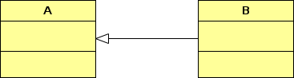

Απλές και μόνιμες (σημασιολογικές) σχέσεις μεταξύ των τάξεων.
Για παράδειγμα μια τάξη Πελάτη (Customer) μιας τράπεζας έχει μόνιμη συσχέτιση με έναν ή περισσότερους Τραπεζικούς Λογαριασμούς (Account).
Κλασική περίπτωση όταν σε μια τρίτη κλάση δημιουργούνται ή/και χρησιμοποιούνται τα συσχετισμένα αντικείμενα.
Παράδειγμα σε κώδικα java
class Customer {
...
}
class Account {
...
}
class BankAccount {
...
Customer c = new Customer();
Account a = new Account();
...
}
Εξαρτήσεις (dependencies)
Συνήθως εκφράζουν προσωρινές αλληλεπιδράσεις μεταξύ των αντικειμένων κάποιων τάξεων κατά τη διάρκεια εκτέλεσης ενός προγράμματος αλλά και την εξάρτηση μιας τάξης από μια άλλη.
Ειδικότερα, μπορούμε να πούμε ότι έχουμε εξάρτηση όταν μια μέθοδος μιας κλάσης καλεί μια μέθοδο μιας άλλης κλάσης ή όταν μια μέθοδος μια κλάσης δέχεται ως όρισμα αντικείμενο μιας άλλης κλάσης.
Η εξάρτηση συμβολίζεται με βέλος και διακεκομμένη γραμμή όπως στο πιο κάτω παράδειγμα.
Εδώ, η κλάση Α εξαρτάται από την κλάση Β.
Επίσης, σαν ένα δεύτερο παράδειγμα, σε ένα σύστημα πληρωμών μια τάξη πληρωμής λογαριασμού (Pay) καλεί μια τάξη ελέγχου εγκυρότητας πιστωτικής κάρτας (Card).
Εδώ πάλι υπάρχει μια εξάρτηση της πρώτης κλάσης από τη δεύτερη.
Συσσωματώσεις (aggregations)
Είναι μία ειδική μορφή συσχέτισης. Είναι μία συσχέτιση που συσχετίζει το "όλον" με το "μέρος" ή "τμήμα".
Η διάκριση από τη συσχέτιση έχει περισσότερο εννοιολογικό χαρακτήρα: το "όλον" δεν μπορεί να "λειτουργήσει" χωρίς το "μέρος".
Η συσσωμάτωση συμβολίζεται με βέλος σε σχήμα ρόμβου όπως στο σχήμα.

Εδώ, η κλάση Α συσσωματώνει την κλάση Β.
Επίσης, σαν ένα δεύτερο παράδειγμα, η κλάση (Car) συσσωματώνει την κλάση (Engine).
Παράδειγμα σε κώδικα java
class A {
List items;
public void AddItem(B newItem) {
items.Add(newItem);
...
}
...
}
class B {
...
}
Συνθέσεις (Compositions)
Είναι μία ισχυρή μορφή συσσωμάτωσης. Το "όλον" ελέγχει πλήρως τα "μέρη" του και ιδιαίτερα τον κύκλο ζωής τους. Π.χ. η διαγραφή ενός αντικειμένου "όλου" διαγράφει και τα "μέρη" του. Η πρόσβαση σε κάποιο "μέρος" γίνεται αποκλειστικά μέσω του "όλου".
Η σύνθεση συμβολίζεται με βέλος σε σχήμα μαύρου ρόμβου όπως στο σχήμα.
Παράδειγμα σε κώδικα java
class A {
B b = new B(); // Η A δημιουργεί αποκλειστικά αντικείμενα Β
...
}
class B {
...
}
Γενικεύσεις (generalizations)
Σε αυτές τις σχέσεις μια υπο-τάξη είναι πιο ειδική από την υπερ-τάξη η οποία είναι πιο γενική.
Συμβολίζεται με βέλος σε σχήμα τριγώνου όπως στο πιο κάτω παράδειγμα.
Εδώ ή κλάση Β εξειδικεύει την πιο γενική κλάση Α.
Παράδειγμα σε κώδικα java
class A {
...
}
class B extends A {
...
}
Υλοποιήσεις ή πραγματοποιήσεις (realizations)
Εδώ, μια κλάση υλοποιεί μια άλλη (interface)
Συμβολίζεται με βέλος σε σχήμα τριγώνου και διακεκομμένη γραμμή όπως στο πιο κάτω παράδειγμα.
Παράδειγμα σε κώδικα java
interface A {
...
}
class B implements A {
...
}
Διεπαφή (interface)
Για τις διεπαφές ο συμβολισμός γίνεται όπως παρακάτω:
Αφηρημένη κλάση (abstract)
Επίσης για τις αφηρημένες κλάσεις ο συμβολισμός είναι παρόμοιος.

Σημείωση
Οι μέθοδες τόσο στις διεπαφές όσο και στις αφηρημένες κλάσεις συμβολίζονται με πλάγια γράμματα.